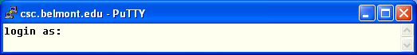
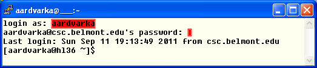
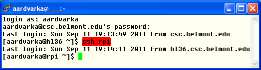
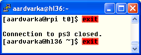

http://www.chiark.greenend.org.uk/~sgtatham/putty/download.html
- Launch PuTTY. After the first-time user dialog, you should reach
the host
selection window below:

- Enter csc.belmont.edu as the Host Name, and be sure to select the SSH Protocol. Click
the Open button. the first time you do this, you will be prompted to
accept the key from the CSC Server. Click Yes, and you should see a new
screen like the following:
 - Respond to the login as: prompt with the UserName you were handed in
class. Respond
to the password prompt with your password. Notice that the password characters
are not echoed on the screen. When you login correctly, you
will see a last login message and a prompt "[userid@hl36
~]$ " as
shown below:
 - At this point, you are logged into the CSC Server, hl36,
but you
have not yet reached the
. Enter the command: ssh
to complete your login. You prompt should change to
[userid@ ~]$
as shown below:
 - At this point you are logged in and ready to begin the lesson. As you work through the lessons, always be sure you are logged into the by checking for the prompt.
- Since you are logged into two machines, you have to log out of both
machines in reverse order. To log out of the
, enter
the exit command at the
prompt. Unlike the picture below,
the screen actually clears before you see the
Connection ... closed.
message and the hl36 prompt.
 - Enter exit at the hl36 prompt. This will close your PuTTY window and exit the application. To reconnect, launch PuTTY and begin at step 2.1
- If you leave your computer while the PuTTY window is open, it will eventually disconnect from the server on its own. When you return, the window title will include the word "(inactive)", and the terminal will not respond to anything you type. To resume, click the PuTTY icon and choose "Restart Session" from the pop-up menu. You will then need to resume at step 2.2 .